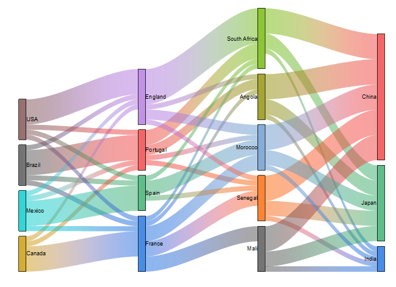

Sankey-Diagramme
Sankey-Diagram
- 
Datenanforderungen
Wählen Sie mindestens zwei Y-Spalten oder einen Wertebereich aus mindestens zwei Spalten aus. Die Diagrammzuweisung macht keinen Unterschied; ausgewählte Spalten werden wie Y-Spalten behandelt.
Diagramm erstellen
- Wählen Sie die gewünschten Daten aus.
- Wählen Sie Zeichnen > Kategorial: Sankey.
Informationen zum benutzerdefinierten Anpassen von Alluvialdiagrammen finden Sie unter folgenden Themen:
Vorlage
Sankey.otpu (installiert im EXE-Ordner von Origin)
Hinweise
Das Sankey-Diagramm ist eine andere Art von Alluvialdiagramm, das ebenfalls Rechtecke für "Knoten", farbige Bereiche (verbinden "Knoten") für "Verbindungen" und vertikale Gruppen der Knoten für "Stufen" verwendet.
Der Unterschied besteht darin, dass die Quelldaten des Sankey-Diagramms Rohdaten sind, deren Knotenwerte nicht als mehrere Spalten für die Stufen angeordnet worden sind. Es können zwei Arten von Rohdaten ausgewählt und gezeichnet werden:
- Eine enthält vier Spalten -- den Indexwert der Quellverbindung, den Indexwert der Zielverbindung, Verbindungswerte und Knotenbeschriftungen. Einige formatierte JSON-Dateien haben diese Datenstruktur.
- Eine enthält drei Spalten -- die Beschriftung der Quellverbindung, die Beschriftung der Zielverbindung und die Verbindungswerte.
Weitere benutzerdefinierte Anpassung:
- Sie können den Abstand zwischen den Knoten und den Abstand zwischen dem Knoten und der Flussverbindung für alle Zeichnungen zusammen anpassen.
- Wenn Sie auf einen Knoten klicken, wird die Eingabe bzw. Ausgabe des gesamten Flusses markiert, einschließlich der Verbindungen und der zugehörigen Knoten.
- Wenn Sie auf eine festgelegte Verbindung klicken, wird die Eingabe bzw. Ausgabe des gesamten Flusses markiert, einschließlich der Verbindungen und der zugehörigen Knoten.
- Sie können die Verbindungsfarbe festlegen, den Knoten folgen oder die Farbauswahl verwenden.
- Sie können entschieden, ob und wie Pfeile für Knoten und/oder Verbindungen gezeigt werden.
- Sie können entscheiden, ob und wie Beschriftungen für Knoten und/oder Verbindungen gezeigt werden.